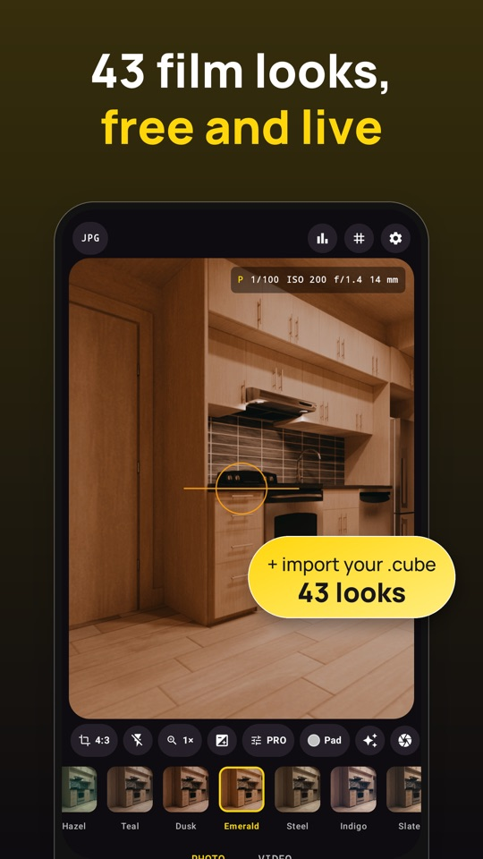
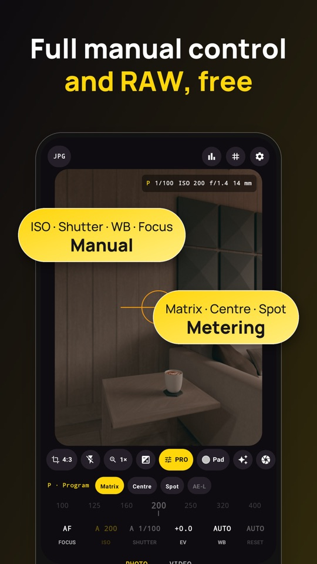
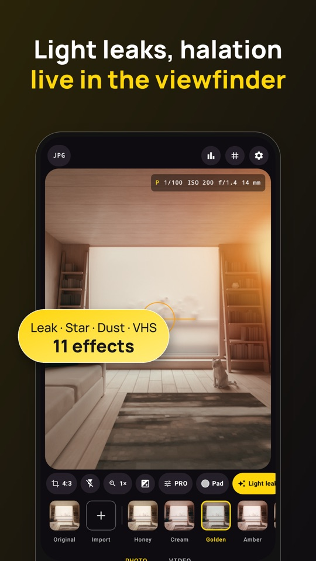
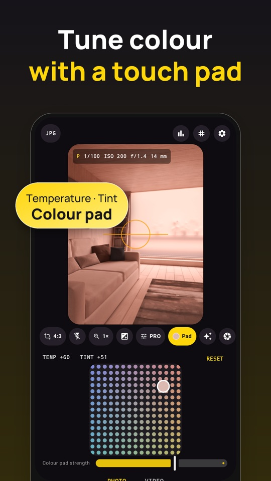
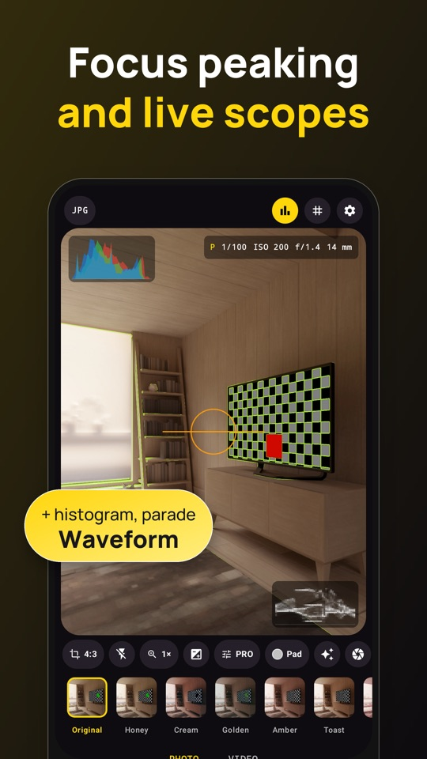
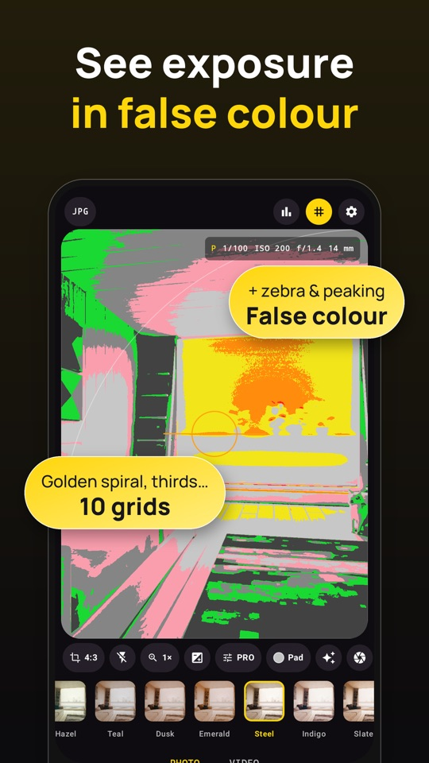
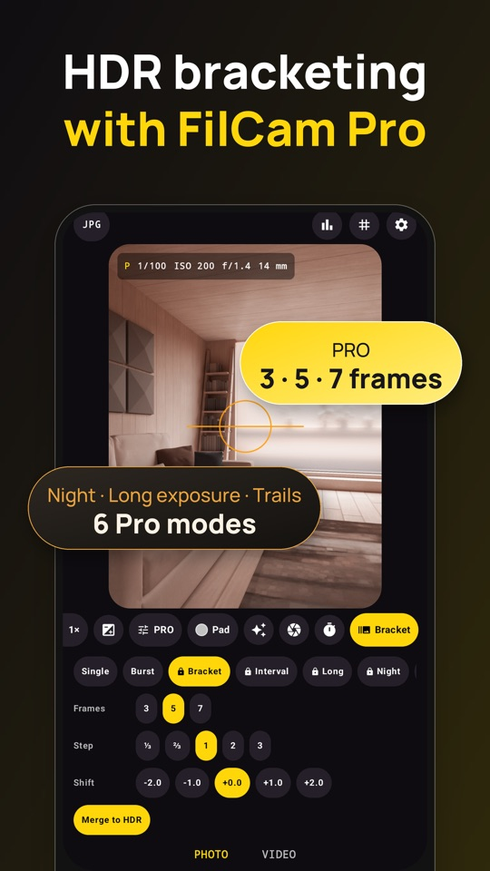
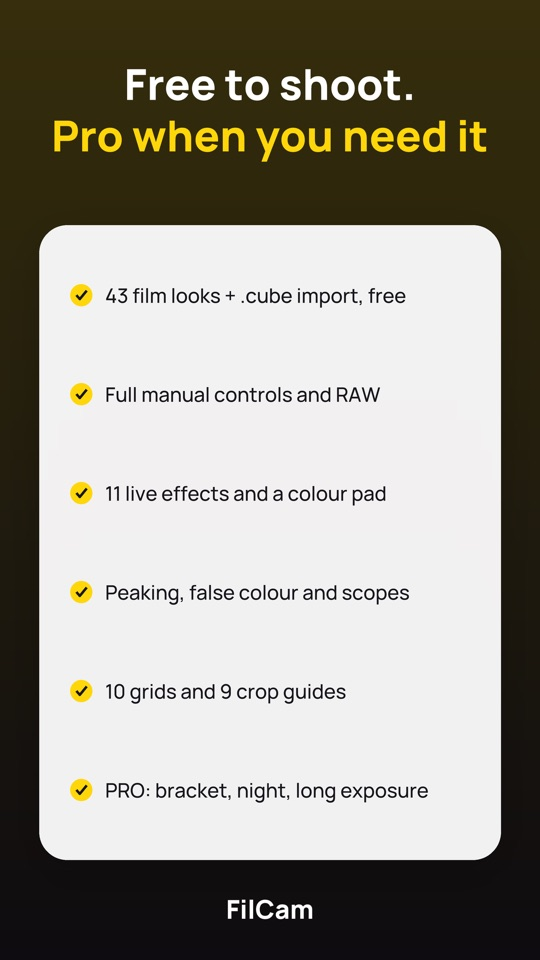

Manual camera & RAW DNG for Android
Every dial a DSLR has. In the phone you already carry.
FilCam puts ISO, shutter, exposure compensation, white balance in Kelvin and manual focus distance on real rulers, with P, S, I and M exposure modes. Shoot RAW DNG for free, preview 43 film looks live, and add FilCam Pro when you want bracketing, night mode, long exposures and light trails.
Android 8.0+ · free to download · no ads, no watermark · no account
Screenshots
Through the viewfinder.








How it works
Pick a mode, dial it in, shoot.
Choose your mode
P for program, S for shutter priority, I for ISO priority, M for full manual. The mode is not a menu you dig for — it follows the dials you touch, exactly the way a camera body works.
Dial it in
Drag the ruler for ISO, shutter, EV, Kelvin or focus distance, or tap a value to set it exactly. Watch focus peaking, false colour, the live histogram and the level react before you commit.
Fire the shutter
Tap, press a volume key or start the self-timer. Take one frame or a burst — or, with FilCam Pro, a 3/5/7-frame bracket, a night stack or an intervalometer sequence — then edit the result without leaving the app.
Features
The controls a camera app usually charges for.
Full manual control
ISO, shutter speed, exposure compensation, white balance in Kelvin from 2200 to 9500 K, and manual focus distance — each on a ruler you can drag or tap. Lock AE, AWB and AF independently.
P / S / I / M like a body
Program, shutter priority, ISO priority and full manual — the mode letter in the readout follows what you have set by hand, so you always know which half of the exposure the camera is still deciding.
RAW DNG, free
Keep the sensor data, not the phone's guess at it. DNG files carry the real capture metadata and no baked-in look, so you can grade them in Lightroom or Darktable. RAW is free — it is not part of FilCam Pro.
43 film looks, live
Every look is previewed on your own scene before you press the shutter, then baked into the JPEG. Import your own .cube LUTs, add light leaks, halation, star, dust or VHS from eleven live effects, and warm or cool the frame on the colour pad.
Peaking, false colour & scopes
Focus peaking, zebra and false colour mark the viewfinder, never the file. A live RGB histogram, parade, waveform and vectorscope, an electronic level, crop guides and ten composition grids — thirds, golden ratio, golden spiral, triangles, diagonals, centre cross, 4×4, 6×6, horizon and dynamic symmetry.
Focus and metering you choose
AF-C, AF-S, macro, infinity or fully manual focus by distance. Matrix, centre-weighted or spot metering. Pinch to zoom, and map the volume keys to the shutter, exposure or zoom.
Bracketing, night & interval PRO
Burst and the self-timer are free. FilCam Pro adds exposure bracketing of 3, 5 or 7 frames with your own EV step for HDR, a night mode that stacks frames, focus stacking, and an intervalometer that runs by shot count or by minutes for timelapse.
Long exposure & light trails PRO
Waterfalls, traffic, star fields and empty night streets. The long-exposure drive runs up to 30 seconds, and light trails hold the frame open from 15 seconds to 5 minutes, keeping the brightest part of every frame while you watch it build.
Your files, and a photo lab
Write into any folder inside Pictures, with a filename pattern built from date, time, counter, ISO and shutter, as JPEG, HEIF or PNG with full EXIF and optional geotagging. Then finish the shot in the built-in editor: curves, HSL, clarity, fade, vignette, undo and compare.
Your photos, your phone
Your photos stay on your phone.
There is no sign-up screen, no cloud library and no sync toggle to switch off. FilCam captures, processes and writes every frame on the device, and no image ever leaves it. What does leave — anonymous usage and crash reports, so a camera that fails on your phone gets fixed — never includes a photo, a file name or a location, and Settings has one switch that stops it.
Exposure modes
Four letters, the same as on a mode dial.
You never pick the mode from a list. Set a value by hand and the camera hands you that control; leave it on auto and the camera keeps it. The letter in the readout just tells you where you stand.
ISO and shutter both automatic. Nudge exposure compensation, frame the shot and let the meter do the arithmetic — with every other manual control still available.
You set the shutter speed, the camera finds the ISO. Freeze a moving subject at 1/1000, or slow it down for water and motion blur.
You pin the ISO, the camera picks the shutter. Keep noise where you want it — base ISO for clean daylight frames, higher only when you choose.
Both halves are yours, across the whole range your sensor reports. Nothing drifts between frames, which is what makes bracketing, intervals and night work repeatable.
Everything on the pro panel
- ISO
- Shutter
- EV
- Kelvin WB
- Manual focus
- AF-C
- AF-S
- Macro
- Infinity
- Matrix
- Centre
- Spot
- AE-L
- AWB-L
- AF-L
- Self-timer
- Burst
- Peaking
- False colour
- Zebra
- Histogram
- Waveform
- Level
- Crop guide
- Grids
- JPG
- HEIF
- PNG
- DNG
- Geotag
- Full EXIF
- + .cube LUTs and the photo editor
With FilCam Pro
- Bracket
- Night
- Focus stack
- Interval
- Long exposure
- Light trails
FAQ
Fair questions.
Does FilCam shoot RAW DNG?
Yes, on phones whose camera hardware reports RAW support — most mid-range and flagship Android phones do, and the option is hidden rather than broken on the ones that do not. DNG is free and not part of FilCam Pro. You can save a DNG alongside a JPEG so you keep both the negative and a ready-to-share file, and the DNG is always the untouched sensor data with no film look baked into it.
How long an exposure can I take?
In S and M mode the shutter goes as long as your phone's sensor reports, free — the app reads the real limit from the camera rather than promising a number it cannot deliver. For longer, FilCam Pro adds a long-exposure drive of up to 30 seconds and light trails that stay open from 15 seconds to 5 minutes. Brace the phone or use a tripod, and trigger it with the self-timer or a volume key so you do not shake the frame.
What is free, and what is FilCam Pro?
Manual controls, RAW DNG, the film looks, the light effects, the viewfinder tools and the photo editor are free, with no ads and no watermark. FilCam Pro adds the advanced drive modes — exposure bracketing, night mode, focus stacking, the intervalometer, long exposure and light trails. It is sold monthly, yearly with a 7-day free trial, or as a one-time lifetime unlock, and Google Play shows the price in your currency before you pay.
Do my photos get uploaded anywhere?
No. Capture, processing, LUTs and editing all run on your phone's own GPU, and no image data ever leaves the device. There is no account and no cloud library. The app does send anonymous usage and crash reports — which controls got used, and a stack trace when something fails — so that a camera that breaks on your phone gets fixed for your phone; never a photo, a file name or a location, and one switch in Settings turns it off. See the Privacy Policy for the full detail.
Where are my photos saved?
In a folder inside your device's Pictures directory — Pictures/FilCam by default, and you can change the folder name in Settings. Files are registered with your media library, so Gallery, Google Photos and any other app see them immediately. The filename pattern is yours too, built from {date}, {time}, a counter, {iso} and {shutter}.
Does it add GPS coordinates to my photos?
Only if you turn on Save location in photos in Settings, which is off until you do. When it is on, the coordinates are written into the photo's own EXIF on the device — nothing is sent to us or to anyone else. Turn it off and no location permission is ever requested.
Can I use my own film looks?
Yes. Import .cube LUT files and they appear in the strip under the viewfinder next to the 43 built-in looks, previewed live on the scene in front of you, so the look is baked in the moment you press the shutter. The built-in editor can also save a grade back out as a .cube file.
Which Android versions and languages does it support?
Android 8.0 and newer. Some controls depend on what your camera hardware exposes — the available ISO and shutter range, HEIF encoding and RAW support all come from the device — so the app shows what your phone can actually do instead of a dead menu item. The app is in nine languages: English, Vietnamese, Japanese, Korean, Chinese, Arabic, Hindi, French and Indonesian, and you can switch in Settings.
Where do I get it?
On Google Play, free to download. Check the package name — app.filmode.filcam — rather than the app name: a camera app's name is easy to copy, a package name is not.
Out now
Ready when you are.
FilCam is on Google Play, free to download, with FilCam Pro there when you need it. Install it, and write to us if you want to tell us what a manual camera app still gets wrong — the phone in your hand may be one we have not tested on.
Questions? Support · trunghieu4121993@gmail.com